植物の病害虫の種類と対策
大切に育てている植物に、虫がついたり、葉に変な斑点が出たり……。家庭の植木・菜園・庭でよく出会う病害虫には、それぞれ「見分け方」と「対処のコツ」があります。このページでは、代表的な病害虫を一覧で整理し、それぞれの特徴・かわいいイラスト・予防と駆除の方法を個別ページでやさしく解説します。
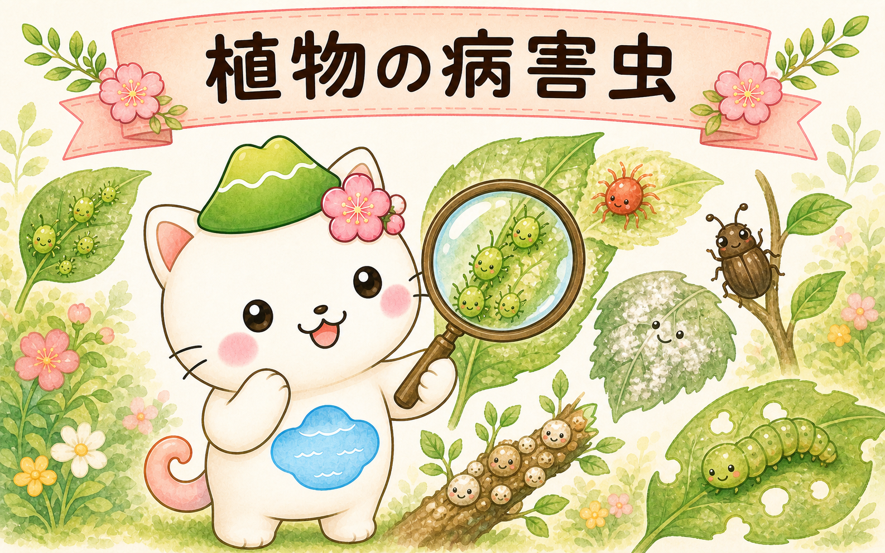
- 早期発見：葉の裏・新芽・株元をこまめに観察。小さいうちなら被害も対処も軽くすみます。
- 予防の環境づくり：日当たり・風通しを良くし、込みすぎを剪定で解消。水のやりすぎ・肥料の与えすぎも避ける。
- 早めの対処：見つけたら広がる前に。手で取る・水で流す・必要なら薬剤を、被害に合わせて選びます。
🐛 害虫
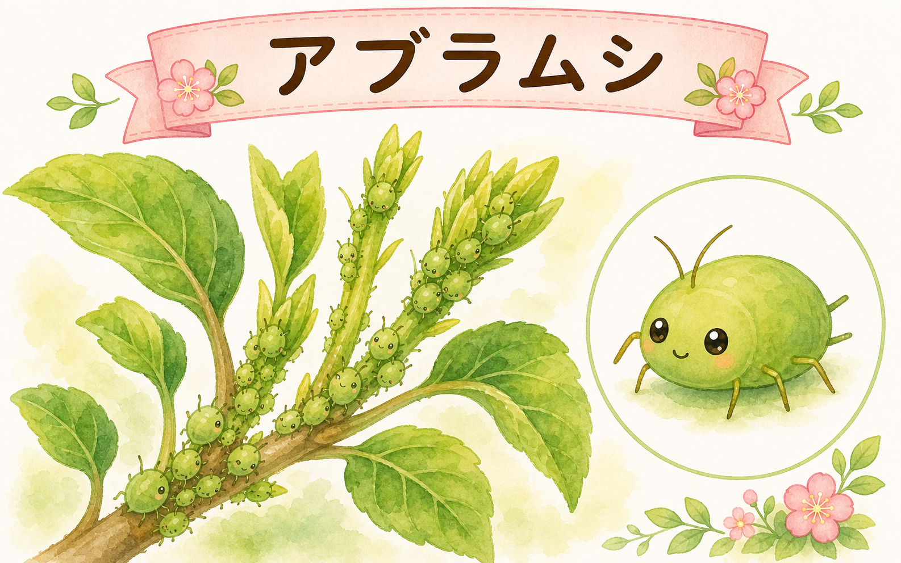
アブラムシ
新芽や茎に群がって汁を吸う。すす病やウイルス病も呼び込む、最も身近な害虫。
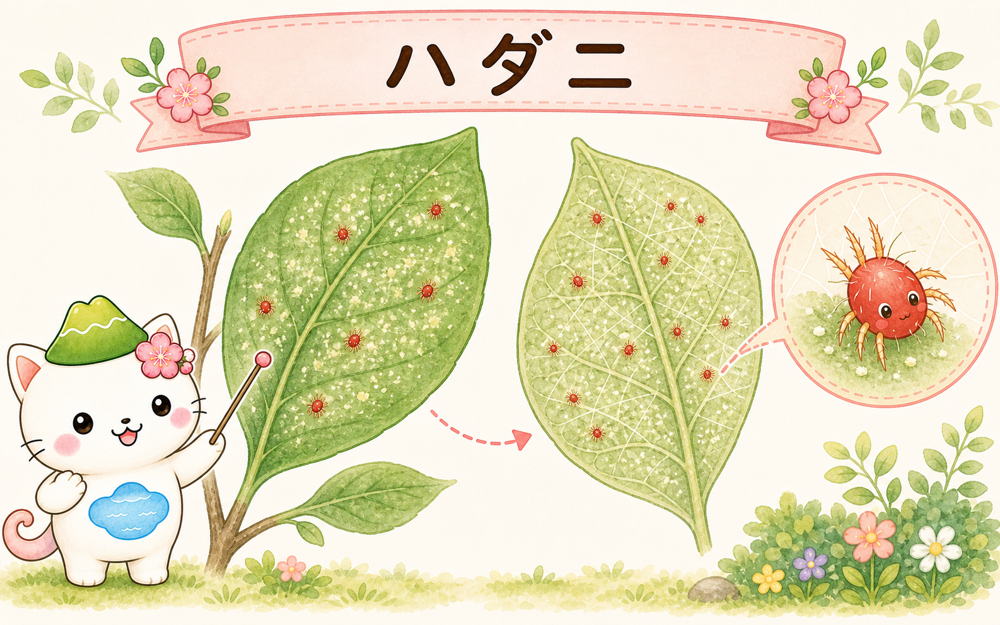
ハダニ
葉の裏につく赤い小さなダニ。葉が白くかすれる。高温乾燥で一気に増える。
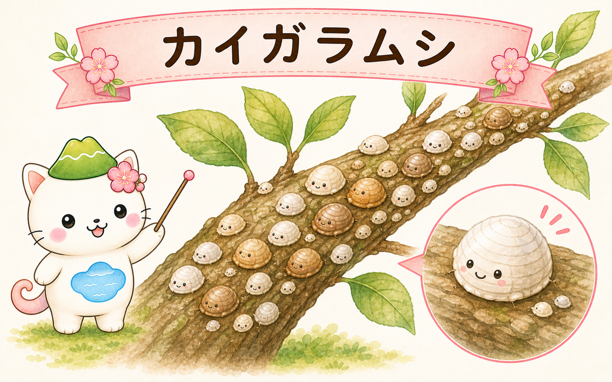
カイガラムシ
枝や葉に殻をつけて固着し汁を吸う。すす病の原因にもなる、退治しにくい虫。
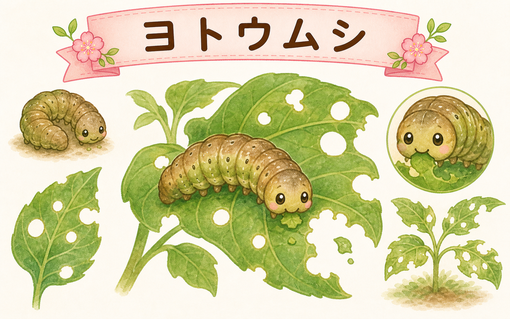
ヨトウムシ
夜に葉を食べる芋虫。気づくと葉が丸坊主に。昼は土の中に隠れている。
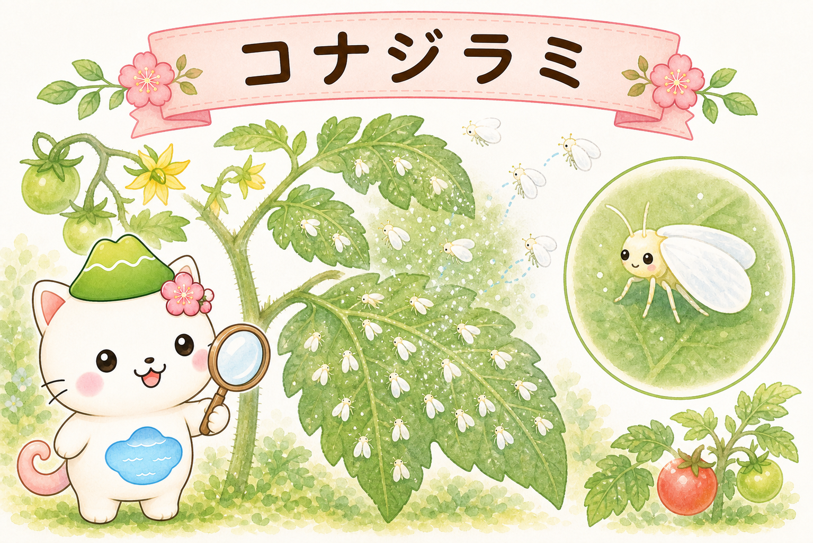
コナジラミ
葉を揺らすと白く舞う小さな虫。葉裏で汁を吸い、すす病も呼び込む。
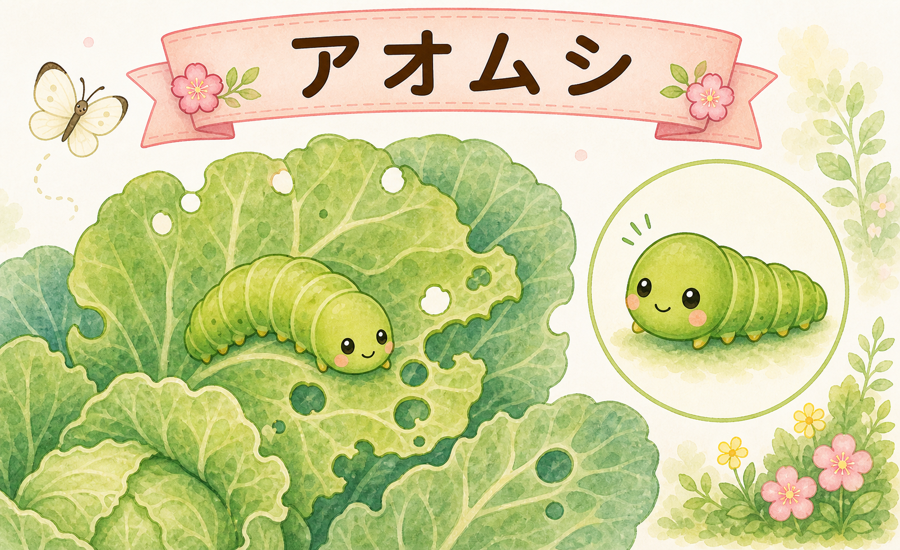
アオムシ
モンシロチョウの幼虫。キャベツなどアブラナ科の葉を穴だらけにする。
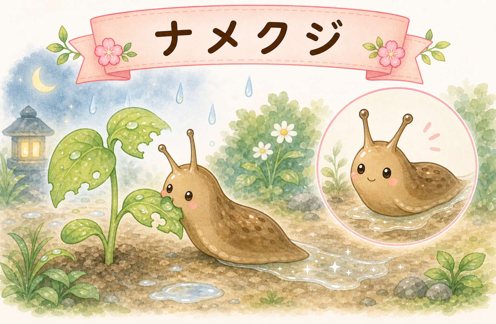
ナメクジ
湿った夜に芽や花、葉を食害。通った跡にキラキラ光る粘液の筋が残る。
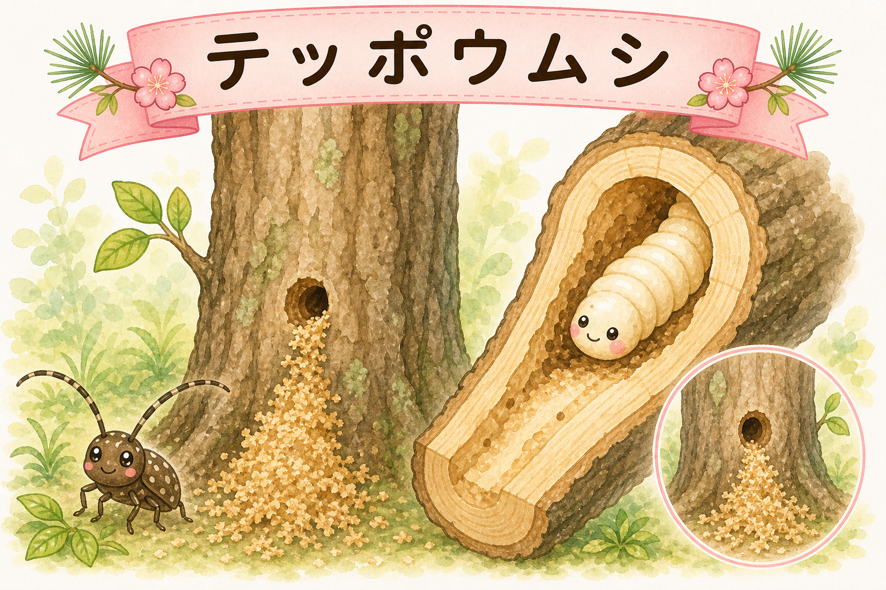
テッポウムシ
カミキリムシの幼虫。木の幹の内部を食害。株元の木くずが発見の手がかり。
🍃 病気
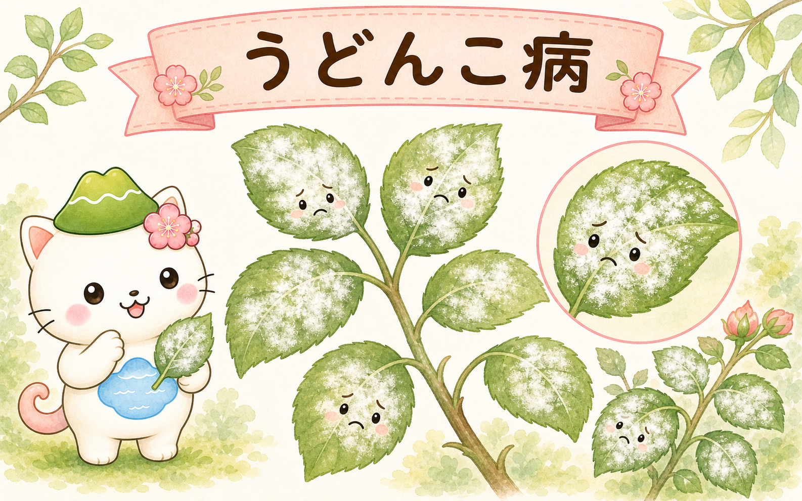
うどんこ病
葉が白い粉をふいたようになるカビの病気。風通しが悪いと広がりやすい。
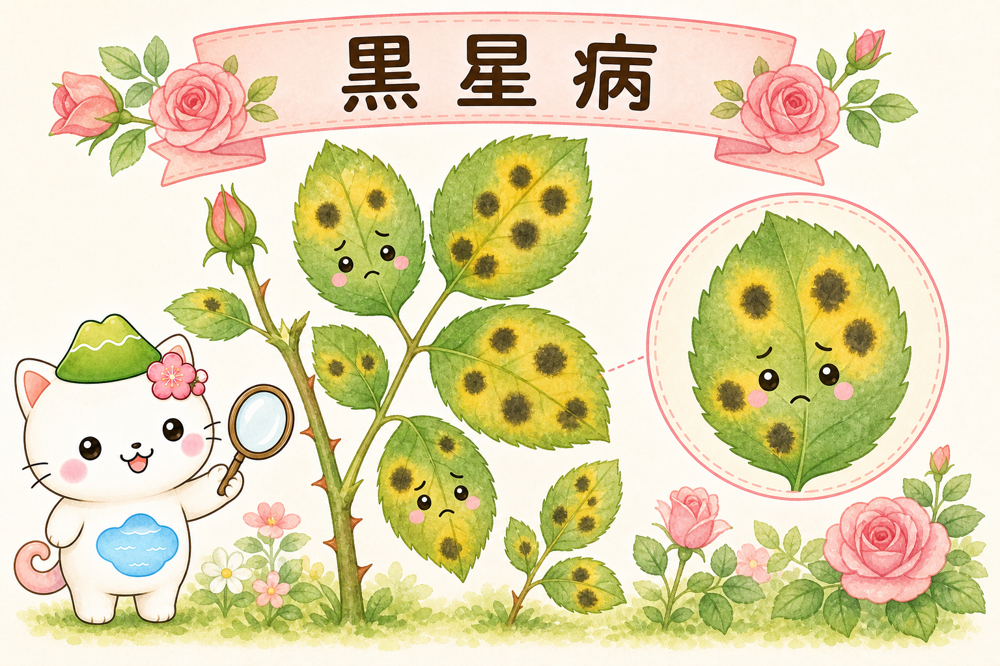
黒星病
バラに多い。葉に黒い斑点が出て黄変・落葉する。雨と泥はねで広がる。
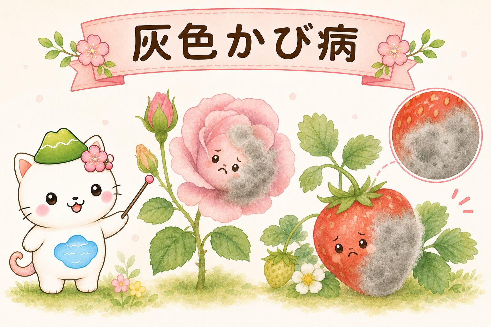
灰色かび病
花や実が灰色のカビで腐る。低温多湿・込み合いで発生しやすい。
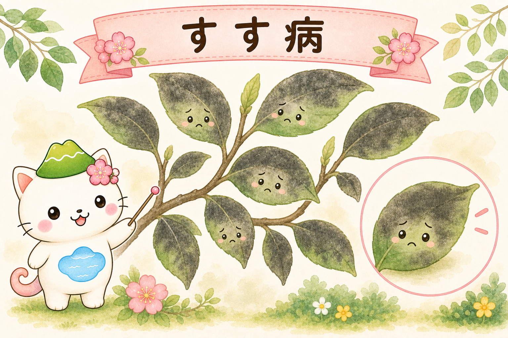
すす病
葉や枝が黒いすすで覆われる。アブラムシやカイガラムシの排泄物が原因。

害虫と病気は、つながっていることも多いよ。たとえばアブラムシやカイガラムシを放っておくと「すす病」になることも。まずは虫を減らすのが、病気の予防にもなるんだ。